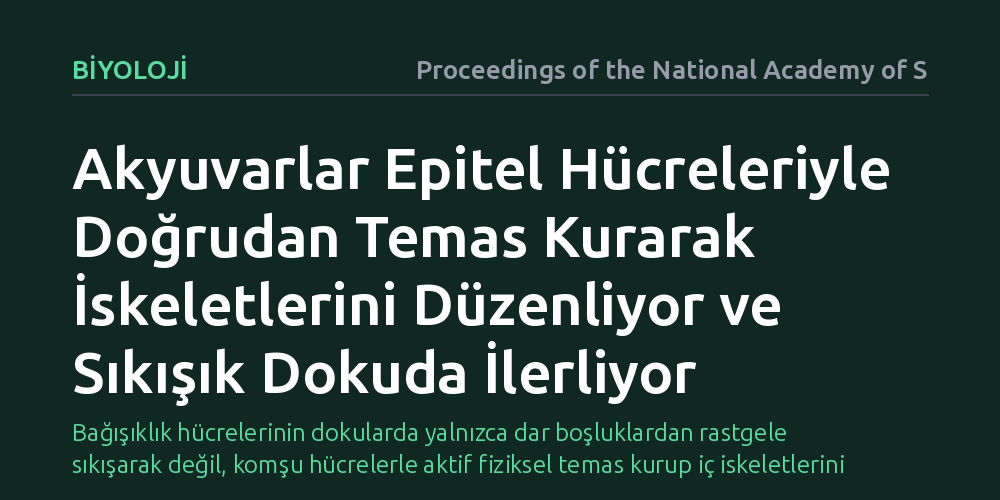

BIYOLOJI · Proceedings of the National Academy of Sciences · 2026-10-27
Akyuvarların hücre yoğunluğunun yüksek olduğu epitel dokularda fiziksel direnci nasıl aştığı araştırıldı. Hücrelerin epitel hücreleriyle doğrudan fiziksel temas kurarak aktin iskeletlerini düzenlediği ve doku içinde bu sayede ilerleyebildiği canlı modellerde gösterildi.
Bağışıklık hücrelerinin dokularda yalnızca dar boşluklardan rastgele sıkışarak değil, komşu hücrelerle aktif fiziksel temas kurup iç iskeletlerini yönlendirerek ilerlediğini gösteriyor.

Bağışıklık sistemimizin devriye hücreleri olan akyuvarlar, vücudumuzu enfeksiyonlara ve doku hasarlarına karşı korumak için sürekli hareket halindedir. Bugüne kadar yapılan bilimsel araştırmalar, bu hücrelerin genellikle hücreler arası bağ doku matrisinde nasıl yol aldığını incelemişti. O ortamlarda akyuvarlar, liflerin arasından adeta akarak ve dar boşluklardan kendilerini sıkarak kolayca ilerleyebiliyordu.
Ancak deri veya mukoza gibi organları kaplayan epitel dokularda durum çok farklıdır. Epitel katmanlarında hücreler birbirine son derece sıkı kenetlenmiştir ve aralarında neredeyse hiç boşluk bulunmaz. Akyuvarların bu denli yoğun ve sert bir mekanik bariyeri nasıl aştığı, hücrelerin birbirine uyguladığı direnci kırarak nasıl ilerlediği uzun süredir aydınlatılamamış temel bir biyolojik bilmeceydi.
Araştırmacılar bu süreci yapay laboratuvar kaplarında değil, biyolojik süreçlerin doğal akışında gözlemlemek için şeffaf yapılarıyla bilinen zebra balığı larvalarını kullandı. Genetik olarak floresan proteinlerle işaretlenen akyuvarların ve epitel hücrelerinin hareketleri, gelişmiş canlı mikroskopi yöntemleriyle gerçek zamanlı ve üç boyutlu olarak kaydedildi.
Bu yöntem sayesinde bilim insanları, bir bağışıklık hücresinin epitel tabakasına girdiği andan itibaren komşu hücrelerle kurduğu mikroskobik temasları tek tek takip etti. Hücre iskeletinin temel bileşeni olan aktin proteinlerinin nerede yoğunlaştığı ve hücrenin hangi noktalardan mekanik itiş gücü ürettiği milisaniye düzeyinde ölçüldü.
Elde edilen bulgular, akyuvarların epitel içinde pasif bir şekilde ezilip büzülerek değil, çok daha aktif bir mekanizmayla hareket ettiğini ortaya koydu. Akyuvarlar, etraflarındaki epitel hücreleriyle doğrudan fiziksel temas kurdukları anda hücre içi aktin proteinlerini bu temas yüzeylerine doğru hızla sevk ediyor. Bu temas, hücre iskeletinde yerel bir yeniden yapılanmayı tetikliyor.
Temas yüzeyinde yoğunlaşan aktin iplikçikleri, akyuvarın komşu epitel hücresine yaslanarak bir itme kuvveti oluşturmasını sağlıyor. Hücre, adeta dar bir tünelde duvardan destek alarak kendini ileri iten bir dağcı gibi, komşu hücrelerin yüzeyini basamak olarak kullanıyor. Böylece akyuvar, epitelin sıkı dokusunu parçalamadan veya dokuya kalıcı zarar vermeden aralardan kayarak ilerleyebiliyor.
Bu çalışma, bağışıklık hücrelerinin doku göçüne dair yerleşik modelleri önemli ölçüde tamamlıyor. Akyuvarların yalnızca kimyasal sinyalleri izleyen veya sıvı gibi akan yapılar olmadığını; çevrelerindeki diğer canlı hücrelerle kurdukları fiziksel temasları birer mekanik kaldıraç olarak kullandıklarını gösteriyor. Hücreler arası temasın hücre içi aktin dinamiklerini doğrudan kontrol etmesi, biyomekanik açıdan yeni bir düzenleme basamağına işaret ediyor.
Bu mekanizmanın anlaşılması, yaralanmalarda akyuvarların hasarlı bölgeye nasıl ulaştığını ve kronik iltihaplanma süreçlerinde epitel bariyerlerinin nasıl aşıldığını kavramak için temel bir zemin sunuyor. İlerleyen dönemde, benzer fiziksel temas mekanizmalarının insan epitel dokularında ve kanser hücrelerinin doku içine yayılma süreçlerinde ne ölçüde geçerli olduğunun araştırılması hedefleniyor.